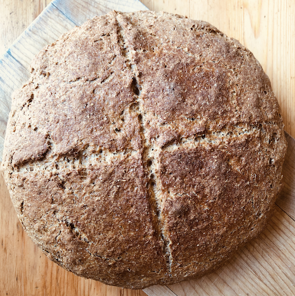

Soda Bread

Description
From the Society for the Preservation of Irish Soda Bread
This is a delicious and incredibly simple bread to make. The soda and buttermilk react to give it the rise it needs. Since there is no proofing time it's a quick bread to make. In less than an hour you can enjoy warm bread straight from the oven
Ingredients
- 3 cups (12 oz) of wheat flour
- 1 cup (4 oz) of white flour
- 14 ounces of buttermilk (pour in a bit at a time until the dough is moist)
- 1 teaspoon of salt
- 1 1/2 teaspoon of bicarbonate of soda
- Optional: 2 ounces of butter if you want to deviate a bit
Steps
- Preheat the oven to 425 F. degrees. Lightly grease and flour a cake pan. In a large bowl sieve and combine all the dry ingredients. Rub in the butter (if using) until the flour is crumbly.
- Add the buttermilk to form a sticky dough. Place on flouredsurface and lightly knead (too much allows the gas to escape).
- Shape into a round flat shape in a round cake pan and cut a cross in the top of the dough.
- Cover the pan with another pan and bake for 30 minutes (this simulates the bastible pot). Remove cover and bake for an additional 15 minutes.
- The bottom of the bread will have a hollow sound when tapped to show it is done.
- Cover the bread in a tea towel and lightly sprinkle water on the cloth to keep the bread moist.
- Let cool and you are ready to have a buttered slice with a nice cup of tea or coffee.